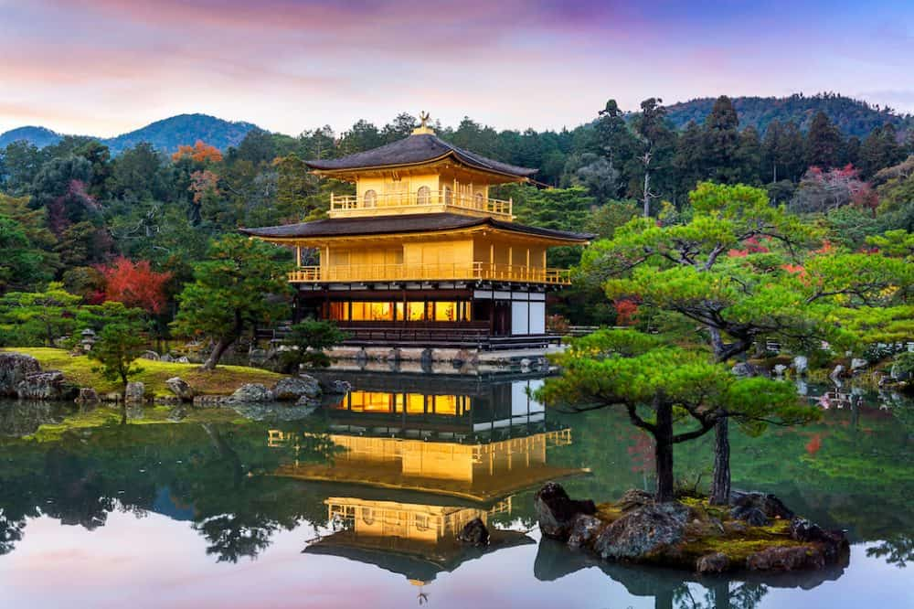
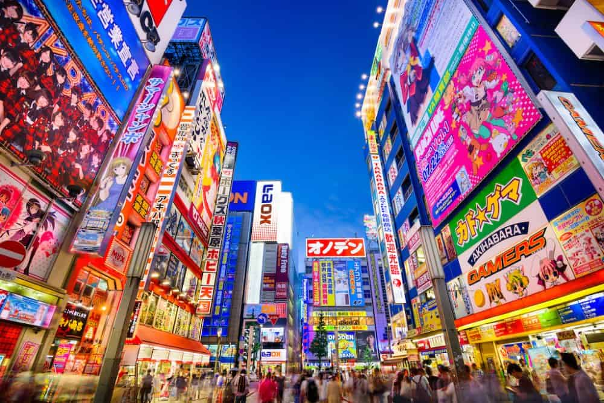

Most beautiful places in the world
-
Kyoto
Kyoto is one of the most favourite Japanese cities for tourists. From the iconic temples, palaces, bamboo forests, delightful gardens to the rich and the vibrant culture, Kyoto is surely going to be a highlight of your journey. Some of the famous points to sightsee in Koyoto includes temples of Kinkaku-Ji, Ginkaku-Ji, Kyyomiza-dera, and the Arashiyama bamboo forest.
-
Tokyo
Tokyo, home to around 12 million inhabitants and the country’s capital, is a popular tourist area of Japan. It is also the eastern capital of the world. The city boasts many eating and shopping places. Although it’s known for many things, public transportation is one thing that supersedes everything else. You can go anywhere in the city via train. Tokyo is also famous for its Anime productions, Harajuku fashion and its keen eye for quirkiness! You’ll have a lot of fun here I promise! Check out how to backpack Tokyo in this great guide.